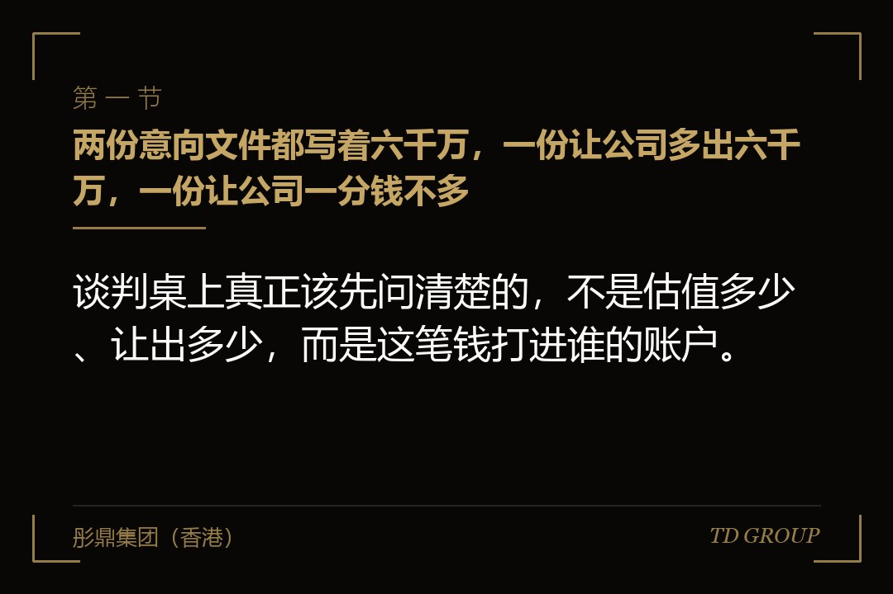
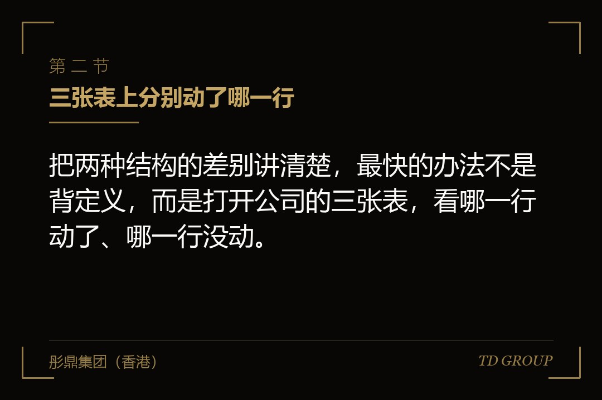
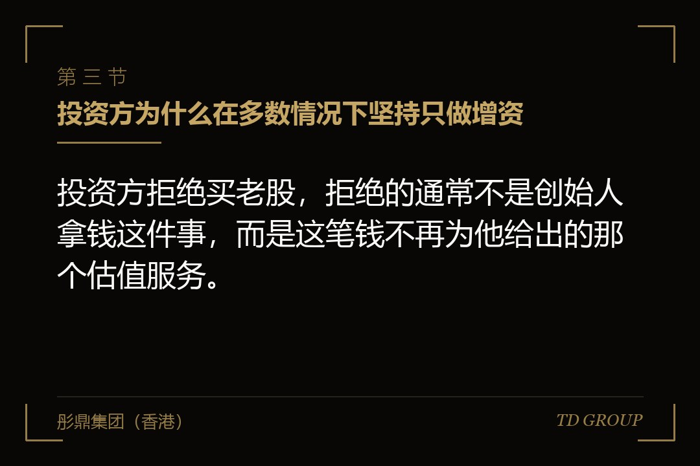

一、两份意向文件都写着六千万，一份让公司多出六千万，一份让公司一分钱不多

结论先行：谈判桌上真正该先问清楚的，不是估值多少、让出多少，而是这笔钱打进谁的账户。一家做工业阀门的企业在同一轮里收到两份意向文件，金额都是六千万，投前估值都是两亿四千万，投资方拿到的持股都是两成。创始人拿着两份文件比了半天，觉得条件几乎一模一样，差别只在措辞：一份写的是以增资方式认缴新增注册资本，另一份写的是受让创始股东持有的部分股权。
他把文件转给财务负责人，对方看完只回了他一个问题——这笔钱进来之后，公司账上会多出多少。两份文件的答案分别是六千万和零。
这个答案对当时的这家企业是要命的。公司那一年正在扩产，两条新产线的预算是四千多万，还有一笔设备尾款要在年内付掉，融资的起因本来就是账上的钱不够把产线铺完。如果签的是后面那一份，交割之后公司账上的钱一分不多，产线该缺钱还是缺钱，而两成股权已经让出去了；多出六千万的是创始人的个人账户，而且那还是税前的数字。
需要说清楚的是，这不意味着老股转让是一种不好的结构。这两种结构解决的本来就是不同的问题：增资解决的是公司缺钱，老股转让解决的是股东缺流动性、或者股权结构该调整了。真正的风险不在于选了哪一种，而在于把它们当成同一笔钱的两种写法——那家企业的创始人差一点就是这样签下去的，理由很朴素：钱数一样、估值一样、让出的比例也一样，看上去有什么区别呢。
本文只讲这两种交易结构本身的分野，以及这个选择会在哪些地方兑现。
有几件相邻的事此处不展开：创始人存量股权到底卖多少合适、什么比例会被投资方直接拦下来，是另一个独立话题，本文一概不涉及；老板日常从公司拿钱的合规边界，不在本文范围内；入股价格公允性怎么认定、报告期内的低价转让为什么可能要按股份支付原则作会计处理，本文只一句带过；这笔钱进来之后怎么管、用途条款怎么写，也是另外的话题；个人所得税的具体计算方式同样不展开，本文只讲税费的责任落在谁身上。股权结构表怎么算、稀释怎么一层层推下去，也请另看专门的讨论。
二、三张表上分别动了哪一行

结论先行：把两种结构的差别讲清楚，最快的办法不是背定义，而是打开公司的三张表，看哪一行动了、哪一行没动。
增资那一侧，动的行很多。银行存款增加，实收资本按新增的注册资本增加，超出注册资本的那部分计入资本公积；现金流量表的筹资活动里会出现一笔吸收投资收到的现金；总股本变大，原股东持有的股数一股没少，但每个人的持股比例同比例下降。这些痕迹是互相印证的——银行流水、出资凭证、工商登记、现金流量表，四个来源指向同一件事。
老股转让那一侧，公司的三张表一行都不动。资产没变、负债没变、所有者权益的总额也没变，变的只是权益内部谁占多少。工商登记上，股东名册换了名字、出资额在股东之间重新分配，公司的注册资本一分钱没变。钱的路径是买方账户直接到转让方账户，中间根本不经过公司。
打个比方就清楚了：增资像往一个水池里注水，池子里的水实实在在多了，每个人分到的比例小了，但可分的水总量大了；老股转让是池子里的水一滴没变，只是产权证上的名字换了一个，换名字的那个人从买家手里拿到了钱。企业在这两件事里的处境完全不同——头一种情况下企业是受益方，后一种情况下企业只是一个交易标的，交易发生在它的股东层面，跟它自己没关系。
一家做精密模具的企业验证过这个差别的杀伤力。创始人和投资方谈了小半年，签的是股权转让协议加一份补充协议，交割顺利，庆功饭也吃了。到了第二个月，公司要采购一台设备，财务去申请付款时发现账上还是原来那些钱。
创始人这才意识到，他理解的融资完成和公司理解的融到钱，从头到尾就是两件事。
他随后把个人拿到的那笔钱中的一部分以股东借款的方式打回了公司，问题看似解决了，但这一进一出留下了两个后遗症：公司多了一笔对股东的负债，需要约定利息、期限与归还安排；而在下一轮的尽调里，这笔进出被要求逐笔说明来龙去脉，因为账上凭空多出一笔股东往来，是审阅人员一定会拉出来问的项目。
这里有个细节值得记住：钱从个人账户再回到公司，法律性质上不是原来那笔投资款，而是一笔新的借款或者一笔新的出资，它要重新走一遍程序，也会在账上留下新的痕迹。绕这一圈的成本，在签字那天是完全看不见的。
三、投资方为什么在多数情况下坚持只做增资

结论先行：投资方拒绝买老股，拒绝的通常不是创始人拿钱这件事，而是这笔钱不再为他给出的那个估值服务。
这个立场有三层来源。头一层是估值的依据。投资方愿意按两亿四千万的投前估值进来，理由是公司未来几年能做到某个数，而那个能做到的前提里，往往就包含这笔钱带来的产能、渠道或者研发投入。钱如果不进公司，前提没了，估值的依据也就空了——他还是按那个未来付的钱，公司却拿不到走向那个未来所需要的资源。
第二层是内部立项的口径。多数机构在向内部报方案时，测算表的起点就是公司拿到这笔钱之后；投资协议模板里通常会有一条关于本轮资金去向的约定，把资金与公司主营业务绑定。这一条不是针对某家企业的不信任，它是机构向自己背后的出资人交代的方式。至于这条约定具体怎么写、进来之后怎么管，是另外的话题，此处不展开。
第三层是利益的方向。增资完成后，新股东和创始人共同面对的是一家钱更多的公司，两边的利益是同向的；老股转让完成后，创始人已经把一部分账面价值换成了现金，而新股东要在未来若干年里靠公司的经营把这部分价值重新挣回来。这个错位不是道德问题，是结构本身自带的。
一家做医用耗材的企业遇到过这个口径最直白的版本。机构在尽调结束后给了明确答复：总额可以谈到七千万，但要全部走增资；创始人个人的资金需求，机构建议放到后面的轮次，或者由公司在利润分配层面另行安排。创始人当时不太理解，他持股七成多，让出一点存量在他看来无关痛痒。机构那边的解释没有绕弯子——我们内部报的方案是投产能，如果其中三千万落到个人账上，那份方案要推倒重报，而重报大概率过不了。
反过来看，投资方什么时候愿意、甚至主动要求买老股？
大致是这几种情形：公司本身现金充裕，增资进来的钱短期没有明确用途，继续扩大股本反而摊薄每股口径的各项指标；股权结构需要清理，早期进来但已不再提供任何帮助的股东、或者过于分散的小股东，买断比留着更省事；投资方希望拿到一个较大的持股比例，而全部靠增资会把股本和估值推到双方都不舒服的位置；创始人持股过于集中，后续激励与新股东进入的空间不足；上一轮投资方到了自己的时间表，需要有人接手它手上的股权——注意这一种买的是投资方的老股，不是创始人的老股，性质完全不同。
这几种情形有一个共同点：买老股是为了解决股权结构的问题，而不是为了让某一个人变现。创始人如果能理解这一点，开口的时候就知道该把话往哪个方向说——把自己的诉求接到一个结构性的理由上，比单说"我想拿一点出来"要好谈得多。
四、想拿一部分出来，该怎么开口
结论先行：这件事最伤谈判的，不是拿钱本身，而是拿的时机和说法。
一家做工业清洗设备的企业提供了一个正面样本。创始人在头一次正式见面时就把这件事摆到了桌上。他说得很具体：公司起步那几年他把自住的房子做了抵押，钱投进了公司，抵押至今没有解除；他希望本轮里有一部分用于解掉这笔抵押，数额他直接报了出来，并且说明解押之后他个人不再有对外负债。投资方的反应出乎他的预料——不但没有为难，反而在后来的沟通里几次提到，这件事让他们觉得踏实。
原因不难理解。投资方在尽调里最怕的从来不是创始人有个人资金需求，而是这个需求他没说、后来自己冒出来。
一个说清楚了、有明确用途、有明确金额、有明确终点的需求，是可以定价的，可以放进条款里去平衡的；一个藏着的需求，在投资方眼里就是不确定性，而不确定性只能靠条款去锁，锁起来双方都难受。
更现实的一层是：创始人个人有没有对外负债、有没有对外担保，本来就是尽调的常规项目，藏是藏不住的，区别只在于是你自己说的，还是他们自己查出来的。
所以开口的时候，有三件事要一次说完。为什么要拿——用途要具体到一件事，不要说"改善个人流动性"这种听不出内容的话；拿多少——给一个明确的数额，不要说"看情况"，模糊的数字会被对方按最坏的可能去理解；拿完之后你还剩什么——你的持股会变成多少，你愿意接受什么样的锁定期与不竞争安排。这三件事说完，谈判的题目就从"该不该让你拿"变成了"这一部分怎么定价、怎么设条件"，后面这个题目是能谈成的。
反过来，几个坏动作值得点名。在交割前的最后一次会上才提——前面所有的测算和内部审批都是按全额增资做的，这时候提等于让对方推倒重来，而人在被迫返工时是不会给好条件的。
把老股转让藏进增资协议的附件、或者一份单独的过渡安排里，指望对方不细看——尽调团队一定会看，而"藏"这个动作本身比金额更伤，它会让对方开始怀疑还有什么别的没说。
拆成两次做，本轮先做一小笔、交割后不久再做一笔——在下一轮的沿革核查里这两笔是连着看的，拆开做不会更好看，只会多出一次需要解释的股权变动。至于用他人名义代持来完成转让，那已经不属于谈判技巧的范畴了。
至于卖多少算多、什么比例会让投资方直接拦下来，是另一个独立话题，此处不展开；本节只讲怎么把这件事放到桌面上。华尔街彤鼎俱乐部里，企业主在这一项上被反复提起的一句话是：能摆到桌上谈的需求几乎都能谈成，藏起来的那些最后都变成了条款。
五、混合方案：一动就动四个变量
结论先行：混合方案不是把总额切成两半那么简单，它一旦成立，至少有四个变量要分别谈定，漏掉任何一个都会在几年之后变成争议。
变量之一是切分与顺序。总额里多少走增资、多少走转让，两部分是同日交割还是分步进行。分步的必须写清楚，前一步不成立时后一步是否自动失效——否则会出现公司已经拿到增资款、而创始人的转让因为某个条件没满足悬在半空，或者反过来，创始人的股权已经过户、公司的钱却因为交割条件没达成迟迟不到。这两种半截状态在实务里都出现过，收拾起来比重新谈一轮还麻烦。
变量之二是两部分的每股价格是不是同一个价。实务中同价的居多，因为不同价会立刻引出一个问题：为什么同一天、同一个买方、同一家公司的股权会有两个价格。但不同价的安排确实存在，比如受让部分不附带本轮的特别权利，价格因此低一些。
无论同价还是不同价，理由都要能写在纸上——这个价格一旦定下来，它就不只是这一轮的事，后续轮次的定价、以及相关的会计处理都会拿它当参照。入股价格公允性具体怎么认定，是另一个独立话题，本文只提醒这一句。
变量之三是受让来的那部分股权带不带本轮的权利。这一条最容易漏，也最容易在几年之后出事。投资方通过增资拿到的股权，通常在股东协议里被赋予一系列特别权利；而它从创始人手里受让过来的那部分，法律性质上原本就是既有的普通股权。这两部分要不要合并成同一类、从哪一天起合并、合并需要什么前提，必须在股东协议和公司章程里写死。
一家做纺织机械的企业在这一条上谈了三轮才谈拢。总额八千万，其中六千万走增资，两千万受让创始人持有的股权。
三轮下来双方发现，真正的分歧不在价格而在这一条：投资方认为它出的是同一笔钱，拿到的自然是同一类股权；创始人一侧的法律顾问则指出，转让过来的是既有的普通股权，不因为换了持有人就自动升级。
最后的处理是在股东协议里明确约定，受让部分自交割日起与本轮新增部分同权，并同步修订公司章程。这一条当时如果没写，几年之后真到了按顺序分钱的时候，谁也说不清那两千万对应的股权算哪一类，而那种时候往往正是各方最没有耐心协商的时候。
变量之四是款项怎么走。混合方案里的两笔钱路径不同，一笔进公司账户、一笔进个人账户。实务中出过的问题是买方为了省事一并打给公司、或者一并打给个人，事后再内部划转。
这个动作在下一轮的尽调里是硬伤：协议约定的支付路径与银行流水对不上，解释成本极高，而当初省下的不过是一两天的操作时间。
同样值得约定清楚的还有交割日的先后——两笔款项到账、工商变更、章程修订、股东名册更新，这几件事的顺序要在交割安排里逐条写明，不要留给交割当天临场协调。
六、税费落在谁身上，以及它为什么会反过来改变结构
结论先行：老股转让这笔钱，合同上写的数字和转让方最终到手的数字之间，隔着一道双方都不太愿意先开口的问题；而这道问题的答案，有时候会把整个方案推回到全额增资。
先把责任讲清楚。转让所得的纳税义务人是转让方本人，这一点不因为协议怎么约定而改变；受让方在多数情形下负有扣缴义务，也就是说买方并不是把钱打出去就完事，它有自己必须完成的法定动作。协议里当然可以约定税费由谁承担，但那是双方之间的商业安排，不改变对外的法定关系——这句话听起来像文字游戏，实际后果很具体：即便约定由买方承担，转让方仍然是被追的那一个。
由此产生了两种常见的写法。一种是含税价：合同价款即为全部对价，相关税费由转让方自行承担并申报。另一种是净价：约定转让方到手的金额是一个确定的净数，相应税费由受让方另行承担。两种写法在合同上可能只差十几个字，落到账上的差额却可能相当可观。
一家做食品包装的企业在这十几个字上栽过跟头。创始人和买方在饭桌上谈的是"我到手两千万"，落到合同上写的是"转让价款两千万元"。交割之后创始人发现实际到手的数额与他的预期有明显差距，双方为这一句话的理解争执了三个多月，最后各让一步、以一份补充协议收场。这件事的金额在整笔交易里不算大，真正伤的是双方在后续几年里共事的基础——他们在下一轮融资时还要坐在谈判桌的同一侧，而这三个月的争执谁都没忘。
净价条款还有一层容易被忽略的连锁反应：买方实际付出的成本高于合同价款，它的每股实际成本因此上升，而这个成本在它内部的测算表里是要记进去的，也会影响它在下一轮里对定价的态度。所以净价条款不是"买方多掏一点"这么简单，它会在后面的谈判里以另一种形式回来。
增资那一侧没有这个问题：投资方的钱作为出资进入公司，不产生转让所得，因此不涉及转让环节的所得税。
这就是为什么有些方案在把税费算清楚之后又被推回了原点——创始人发现自己想到手的那个净数，需要一个明显更大的合同价款去支撑，而那个更大的数字会把投资方的持股或者本轮估值推到双方都不接受的位置，于是干脆改回全额增资，个人的资金需求另想办法解决。这个回头的动作本身不是失败，它恰恰说明双方在签字之前把账算到底了。
跨境持股架构下，老股转让还牵涉登记变更与资金路径的先后顺序，顺序错了往往补不回来，那是另一个独立话题，此处不展开。个人所得税的具体计算方式同样不在本文范围内。本节只讲责任落在谁身上，以及这个落点会怎么反过来影响结构选择。
七、下一轮和尽调会怎么回看，以及开口之前该问自己的几个问题
结论先行：增资还是转让，签的时候是一道结构题，几年之后是一道解释题——而解释的难度，在签字那天就已经定下来了。
一家做工业机器人系统集成的企业体会过这一点。它前三轮融资里有两轮包含创始人的老股转让。
到了第四轮，领投方在尽调阶段做了一张沿革表，把公司成立以来每一次股权变动的时间、性质、金额、受让方、每股价格全部列出来，然后问了一个很朴素的问题：这几笔转让的钱，后来去了哪里。
创始人对其中一笔答不上来——那笔发生在四年前，受让方是一位早期股东介绍来的个人，钱到账之后他做了几项个人安排，当时没有留下清晰的记录。那一轮从递交材料到最终签署，谈了五个多月。
需要说明的是，问这个问题的人并不是在怀疑什么，他只是必须把每一笔都合上。回看时通常会核到这几处：每次变动的工商登记与协议约定是否一致；转让价格与同期或相近时点融资价格之间是什么关系；受让方与公司、与创始人之间是否存在关联；款项的实际支付路径与协议约定是否一致，有没有出现第三方代付、或者走个人之间往来的情况。
这里有一个结构性的差别值得企业主提前知道：增资那一部分的证据链是现成的——公司的银行流水、出资凭证、工商登记、现金流量表的筹资活动，几个来源互相印证，调出来就能用；老股转让那一部分，公司账上什么都没有，全部证据都在个人与个人之间，要靠协议、完税凭证、个人银行流水去拼。
同样是一笔股权变动，前者是从公司账本里调出来，后者是从若干年前的个人记录里翻出来。这就是为什么老股转让在几年之后普遍比增资更难解释——不是它本身有问题，而是它天然缺少公司这一层证据。
华尔街彤鼎俱乐部里被反复提起的一条经验是：本轮省下的那点解释成本，下一轮会连本带利地还回来。
所以在这一轮开口之前，值得先把这几个问题问自己一遍。其一，我这一轮真正要解决的是什么——是公司缺弹药，是我个人缺流动性，还是股权结构该清理了？三个答案对应三种不同的结构，混在一起谈是谈不成的。
其二，如果全部走增资，我个人的那个需求还在不在、有没有别的解法——推迟到后面的轮次、通过公司层面的正常分配、或者在锁定与后续安排上做交换。其三，如果一定要有转让的部分，我准备好把它摆到桌面上说清楚了吗——用途、金额、拿完之后我还剩什么、我愿意接受什么条件。
其四，混合方案的四个变量我是不是都过了一遍——切分与顺序、两部分的价格、受让部分的权利归属、款项的支付路径。其五，税费按含税价还是净价谈，我算过两种写法下自己实际到手多少、对方实际付出多少吗？
其六，五年之后有人拿着一张沿革表来问我每一笔的去向，我今天做的这个安排，那时候解释起来是容易还是费劲？
彤鼎集团（香港）有限公司在这类事情上承担的是统筹与陪同角色：与企业方一起把总额拆成增资与转让两部分分别测算，把上面四个变量逐条落成条款文字，把税费口径在谈判早期而不是交割前夜摆清楚，并且站在下一轮与尽调的视角上反过来检查本轮的安排今后好不好解释。
涉及审计、法律意见、税务申报与证券发行等持牌业务的，一律由具备相应资质的合作机构承做。以上均为市场经验性表述，实际安排受交易条件、主体性质与所在法域影响，不构成固定标准。
回到开头那家工业阀门企业——他最后签的是混合方案：五千万走增资进公司，用于那两条产线和设备尾款；一千万受让他个人持有的股权，用于解掉早年的抵押；两部分同价、同日交割，受让部分在股东协议里写明自交割日起与新增部分同权。
本质上，增资和转让从来就不是同一笔钱的两种写法，关键在于你先想清楚这一轮到底是公司要钱还是股东要钱，然后再去决定这笔钱该从哪个门进来。